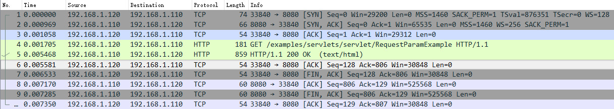
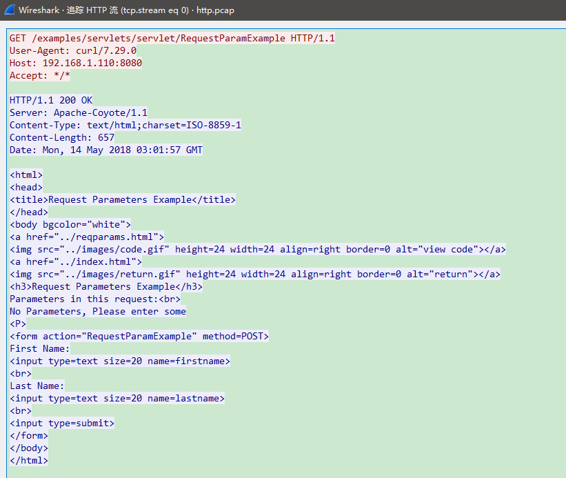
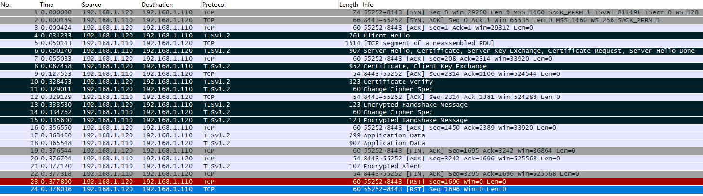
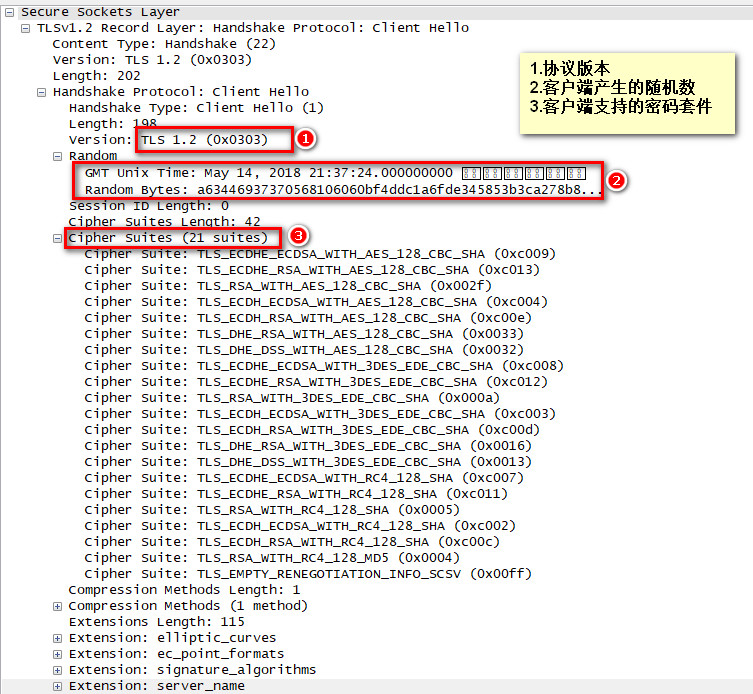
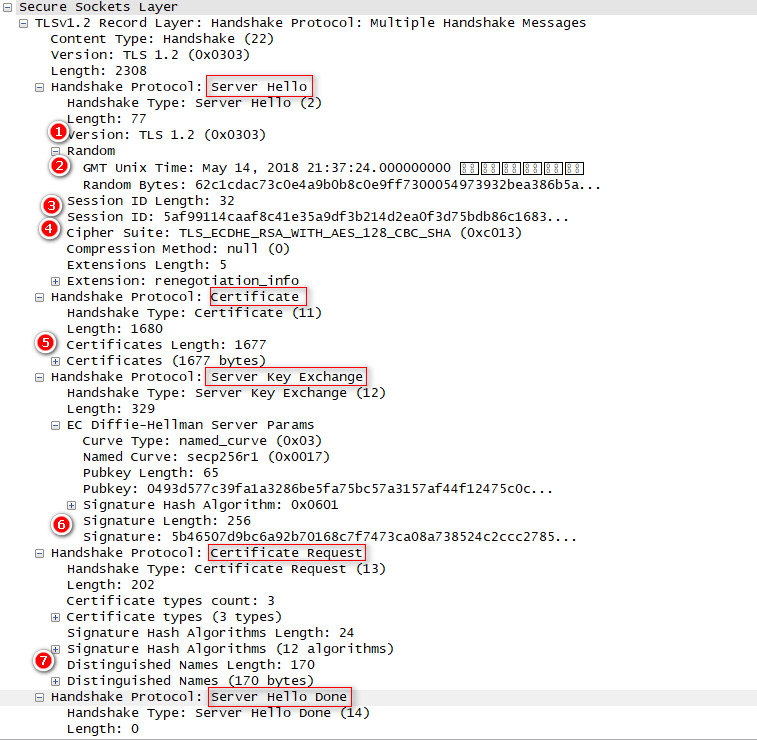
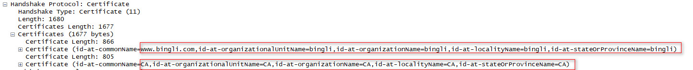
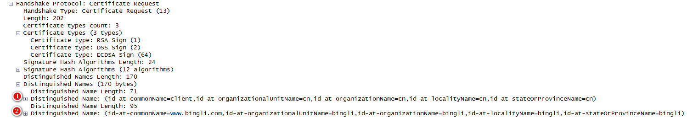
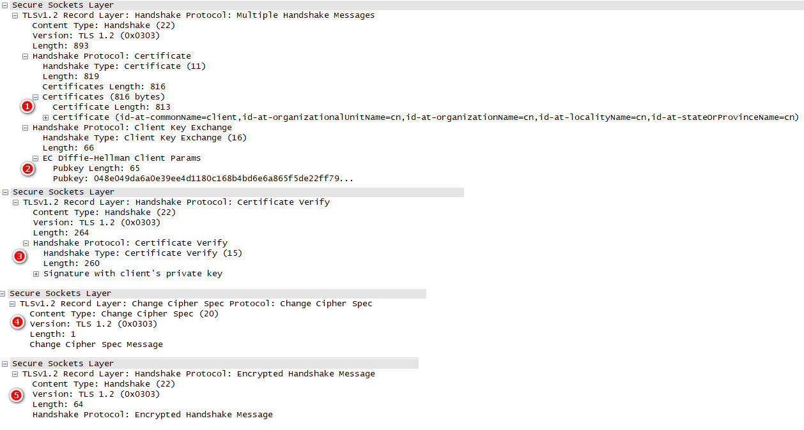
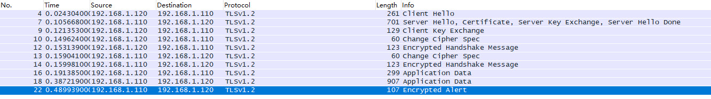

前言
上一篇文章已经讲了如何给tomcat配置https，证书制作等，本篇使用协议分析工具深入理解https，看看https握手的过程以及可能出现的问题，使用的环境：
win10 x64
CentOS7.3 x64
Wireshark Version 2.6.0 (v2.6.0-0-gc7239f02) 下载地址
报文抓取
HTTP
首先我们来看一下，在不配置安全的情况下，http请求和响应的报文是如何的？这里由于我们是本地访问，因此无法使用wireshark抓取Loopback接口的数据包，因此需要用到linux的tcpdump命令来抓取数据。注意需要root用户。那么在上篇的环境下，启动tomcat，打开命令行执行如下命令：
1 | 查看help信息 |
在生成http.pcap文件，拷贝到windows后，用wireshark打开http.pcap文件：

数据包1-3：很明显这是tcp协议3次握手建立连接的数据包
数据包4-5：http请求和响应的数据包，右键点击数据包4–>追踪流–>HTTP流：

可以看到，红色部分为http请求数据，蓝色部分为http的响应
数据包6：客户端对收到数据包5的确认
数据包7-10：tcp协议4次挥手断开连接的数据包
HTTPS
这里有一些概念，https握手实际为SSL/TLS握手过程，可以分成两种类型：
1）SSL/TLS 双向认证，就是双方都会互相认证，也就是两者之间将会交换证书。
2）SSL/TLS 单向认证，客户端会认证服务器端身份，而服务器端不会去对客户端身份进行验证。
SSL/TLS协议的基本思路是采用公钥加密，即客户端先向服务器端索要公钥，然后用公钥加密信息，服务器收到密文后，用自己的私钥解密。但是存在两个问题，
（1）如何保证公钥不被篡改？
解决方法：将公钥放在数字证书中。只要证书是可信的，公钥就是可信的，而数字证书的安全性又由CA认证中心来保证
（2）公钥加密计算量太大，如何减少耗用的时间？
解决方法：每一次对话（session），客户端和服务器端都生成一个”对话密钥”（session key），用它来加密信息。由于”对话密钥”是对称加密，所以运算速度非常快，而服务器公钥只用于加密”对话密钥”本身，这样就减少了加密运算的消耗时间。实际上https具体请求和响应的内容就是用的对话密钥加密解密的
上面我们已经启动了tomcat，8443端口就是需要https访问的端口，这里我们为了排除浏览器干扰，决定使用java写一个客户端程序访问https，代码如下：
1 | import java.io.BufferedReader; |
wireshark中设置抓包规则，port 8443，然后在Linux下运行这段代码，抓取到的数据包如下：

ssl/tls握手的主要流程入下：
| Client | Server |
|---|---|
| 1 Client Hello | |
| 2 Server Hello 3 certificate 4 (server_key_exchange) 5 (certificate_request) 6 server_hello_done |
|
| 7 (certificate) 8 client_key_exchange 9 (certifiate_verify) 10 change_cypher_spec 11 Encrypted Handshake Message |
|
| 12 change_cypher_spec 13 Encrypted Handshake Message |
第一步是客户端向服务端发送消息：

Client Hello
客户端向服务端发送 Client Hello 消息，这个消息里包含了
（1）采用的协议版本，比如TLS 1.2
（2）客户端生成的随机数Random1，稍后用于生成”对话密钥”
（3）客户端支持的加密算法(Support Ciphers)
第二步服务器回答给客户端以下信息 ：

Server Hello
此消息中包含如下信息：
（1） 确认使用的协议版本
（2） 服务端生成的随机数Random2，客户端和服务端都拥有了两个随机数（Random1+ Random2），这两个随机数会在后续生成“对话秘钥”时用到
（3） session id
（4） 确认使用的加密套件，根据从 Client Hello 传过来的 Support Ciphers 里确定一份加密套件 ，例如
Cipher Suite: TLS_ECDHE_RSA_WITH_AES_128_GCM_SHA256 (0xc02f)
ECDHE : 密钥交换算法，用于生成premaster_secret（用于生成会话密钥master secret）
RSA : 签名算法，用户安全传输premaster_secret
AES_128 : 连接建立后的数据加密算法
GCM : 一种对称密钥加密操作的块密码模式
Certificate（Server）
此消息服务端将自己的证书下发给客户端，让客户端验证自己的身份，客户端验证通过后取出证书中的公钥，具体信息如下：

可以看到这就是我们在上篇文章里创建的服务端证书信息。
Server Key Exchange
只有在客户端与服务器端双方协商采用的加密算法是DHE_DSS、DHE_RSA、DH_anon时Server Certificate消息中的服务器证书中的信息不足以生成premaster secret时服务器端才需要发送此消息
Certificate Request
此信息表示要求客户端提供证书，当开启客户端验证即使用了双向认证的时候会发送此消息。主要包括
（1） 客户端可以提供的证书类型
（2）服务器接受的证书distinguished name列表，可以是root CA或者subordinate CA。如果服务器配置了trust keystore, 这里会列出所有在trust keystore中的证书的distinguished name。

可以看到这就是我们在上篇文章里创建的信任库cacerts.jks中证书信息
Server Hello Done
Server Hello Done 通知客户端 Server Hello 过程结束
第三步是客户端继续向服务端发送消息：

Certificate（Client）
当服务端开启客户端验证的情况下，客户端将会把客户端证书发送给服务端，从上图中可以看到正是客户端证书client.p12的信息
Client Key Exchange
客户端根据服务器传来的公钥生成了 Pre Master Secret，Client Key Exchange 就是将这个 key 传给服务端，服务端再用自己的私钥解出这个 PreMaster Secret 得到客户端生成的 Random3。至此，客户端和服务端都拥有 Random1 + Random2 + Random3，两边再根据同样的算法就可以生成对话密钥Master Secret，握手结束后的应用层数据都是使用这个对话秘钥进行对称加密和解密。
RSA ：premaster_secret是由客户端生成的随机数，用服务器证书中公钥加密后传输，服务器端采用私钥解密。
Diffie-Hellman： 对于Diffie-Hellman算法而言，双方通过Server Key Exchange Message 与 Client Key Exchange Message 交换两个数即可各自算出相同的加密密钥，用此当premaster_secret
Certificate Verify
在服务端开启了客户端验证的情况下，客户端会发送此消息给服务端，其中携带到这一步为止收到和发送的所有握手消息用客户端证书私钥所做的签名，服务器收到此信息可利用公钥验证，是典型的数字签名验证场景。
Change Cipher Spec（Client）
客户端生成master secret之后即可发送通知给服务器端，以后要使用对称密钥master secret来加密数据了！客户端使用上面的3个随机数client random, server random, pre-master secret, 计算出48字节的master secret, 这个就是对称加密算法的密钥。
Encrypt Hanshake Message（Client）
客户端发送握手结束通知，同时会带上前面发送和接受内容的签名到服务器端，保证前面通信数据的正确性
第四步是服务端向客户端发送消息：
Change Cipher Spec（Server）
服务端生成master secret之后即可发送通知给客户端，以后要使用对称密钥master secret来加密数据了
Encrypt Hanshake Message（Server）
服务端发送握手结束通知，同时会带上前面发送和接受内容的签名到客户端，保证前面通信数据的正确性
整个握手过程可以参考RFC5246文档
HTTPS单向认证
上面讲的是双向认证的报文分析，那么如果是单向认证，报文如何，是否为上面分析的那样？我们实验一下，修改tomcat的配置：
1 | <Connector port="8443" protocol="org.apache.coyote.http11.Http11Protocol" |
启动tomcat后还是相同的抓包方式，相同的访问方式，抓取到的报文如下：

可以看到，https单项认证确实比双向认证少了Certificate Request、Certificate（Client）、Certificate Verify过程。
java实现ssl通信
基本代码如下：
1 | import java.io.BufferedReader; |
这样，基本的安全通信就写好了，其实tomcat的https原理也就是这样，只不过他做了一些封装，比如我们来看看org.apache.tomcat.util.net.jsse.JSSESocketFactory这个类，它实现了上面的ServerSocketFactory接口，构造函数如下和初始化方法：
1 | public JSSESocketFactory (AbstractEndpoint<?> endpoint) { |
是不是和上面的代码很像，关键就是SSLContext这个上下文，获取到的ServerSocketFactory的实现是SSLServerSocketFactory。好了本文到此为止，如果有一些报文分析的案例，后面会补充到这里。